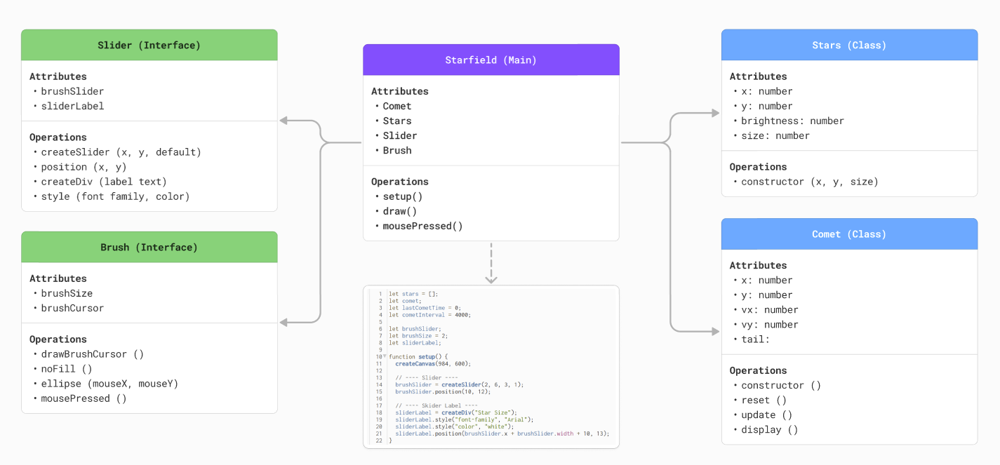
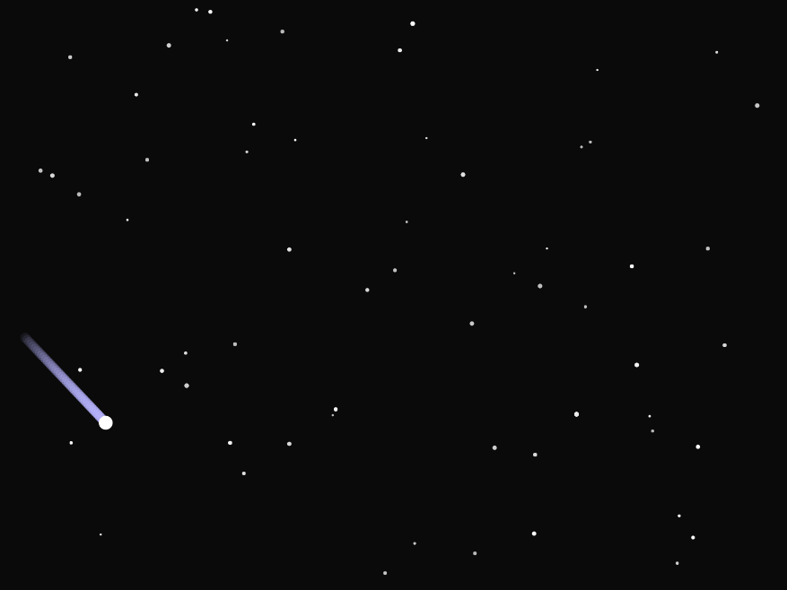
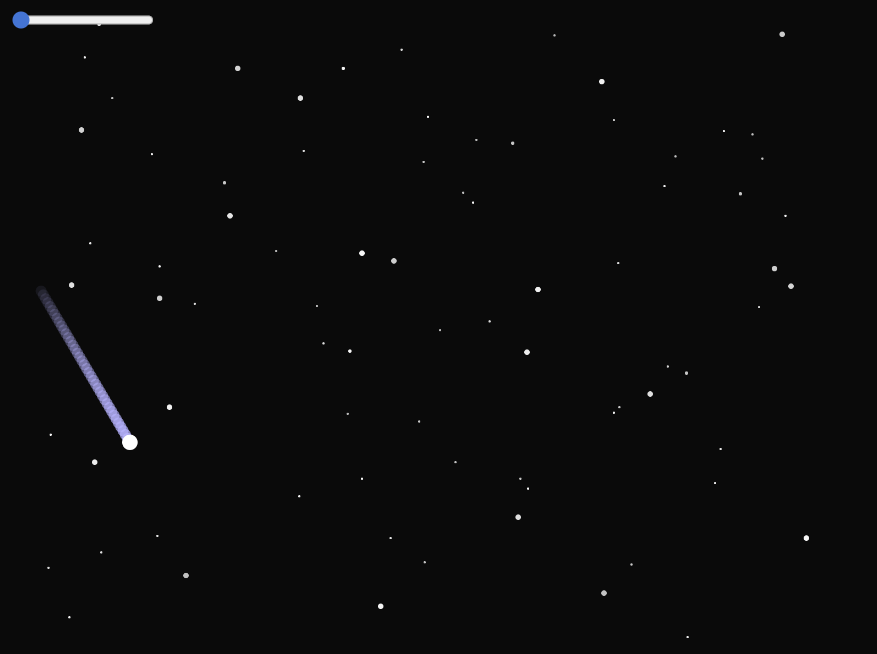
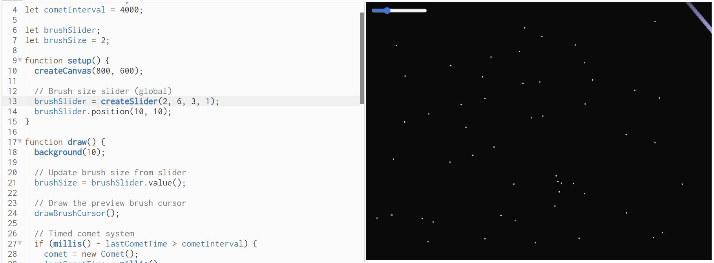
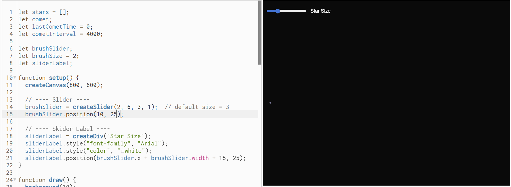
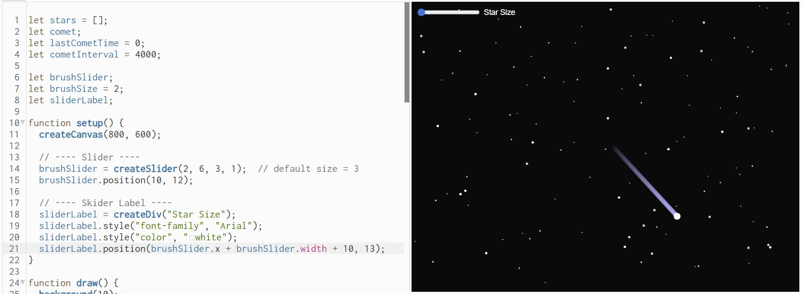

Roxanna's Week 11 P5js Homework
🌠🌌Starfield Creator🌌🌠
Welcome to Starfield Creator!
Create your own starfield by simply using your cursor to add stars. You can also adjust the size of your star by using the slider. Happy stargazing! 🌟🔭
UML Diagram: The UML diagram below showcases a breakdown of the attributes and operations within the p5js sketch. I have it divded by the main section (starfield), classes (stars and comet), and the interface (slider and brush).

Over the past few weeks, I've noticed that my projects have been revolving around space related content. To continue with that theme, I decided to make a sketch where the user can create their own starfield.

With the star drawing element implemented, I wanted to provide the user with the ability of adjusting the size of the stars. So I added a slider to the upper left hand corner of the sketch.

When I implemented the slider, the max size of the stars were a bit too large at "10", so I decreased the max size from "10" to "6" so there would still be a decent size variation.

To better inform the user of the slider's function, I added the label "Star Size" to the right of the slider.

When I first implemented the slider and label, I wasn't happy with the placement and alignment, so I adjusted the positions incrementally until they both landed in a visually appealing position.
